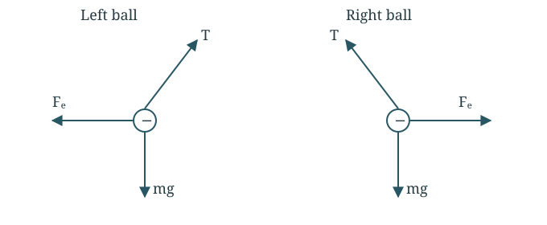
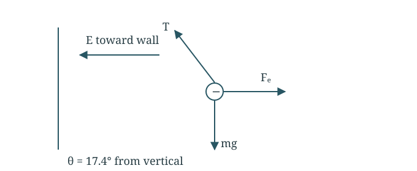
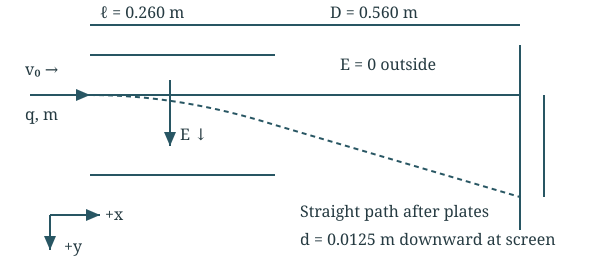
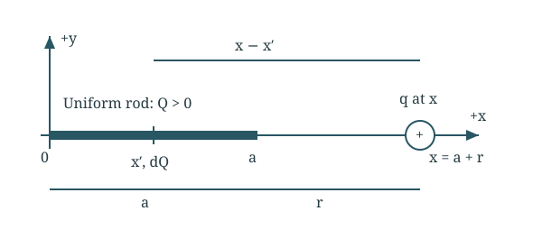

Equilibrium and electric fields · Worked solutions
4 assigned questions with the setup, substitutions and final answers.
Question 121.63 · Two suspended charged spheres
Two spheres of mass 15.0 g hang from one point on threads of length 1.20 m. Equal negative charges make each thread tilt 25.0° from vertical. (a) Draw each free-body diagram. (b) Find the charge magnitude. (c) Shorten both threads to 0.600 m, keeping the charges unchanged; find the new angle.

Free-body diagrams for both balls: electric repulsion points outward; tension points toward the support.
Part (a) Balance the forces
For each ball, tension points along the string, weight points down, and electric repulsion points away from the other ball.
Tcosθ=mg,Tsinθ=FeTcosθTsinθ=mgFe⇒Fe=mgtanθ
Part (b) Find separation and charge
Each ball moves L sin θ away from the centre line.
Shorter threads bring the spheres closer at the old angle, increasing repulsion. The new angle must increase. Both actual charges are negative; 2.80 µC is the magnitude.
Question 221.65 · Infer a field from a hanging ball
A 12.3 g ball carrying −1.11 µC hangs on a 28.6 cm string from a vertical wall. The string makes 17.4° with the wall in a uniform horizontal electric field. Find the field magnitude and direction.

Forces on the negative ball. The electric field points toward the wall, opposite to the electric force.
Balance the ball
Divide the horizontal balance by the vertical balance.
Use |q| for the magnitude. The force is away from the wall; the negative charge makes E point toward the wall.
E=∣q∣Fe=1.11×10−60.0378=3.41×104N/C
Final answer
3.41 × 10⁴ N/C, toward the wall.
The string length cancels because the equilibrium angle is already given. A negative charge feels a force opposite to the electric field.
Question 321.78 · Deflection between charged plates
An object enters horizontal plates at 5.00 × 10³ m/s. The plates are 26.0 cm long and produce a downward field of 800 N/C; outside them the field is zero. A collecting screen is 56.0 cm beyond the plate end. Total downward deflection at the screen is 1.25 cm. Ignore gravity and air resistance. Find q/m.

Geometry and directions used below. Schematic, not to scale.
Find time in each region
Horizontal speed stays constant. Take downward as positive y.
The acceleration stops outside the plates, but the vertical velocity does not vanish. Including only the displacement inside the plates would give the wrong charge-to-mass ratio.
Question 421.79 · Field and force from a charged rod
Positive charge Q is uniform along the x-axis from 0 to a. A positive point charge q is at x = a + r. (a) Find the field components for x > a. (b) Find the force on q. (c) Show the far-away limit when r ≫ a.

Geometry and directions used below. Schematic, not to scale.
Part (a) Write the field of a small piece
Use x′ for the source position and x for the observation point. All contributions point right.
Eₓ = kQ/[x(x − a)], Eᵧ = 0; F = kqQ/[r(r + a)] along +x.
For r≫a, r+a≈r, so F≈kqQ/r2. Far away, the rod behaves approximately like a point charge. As the gap approaches zero, this ideal line-charge model diverges.